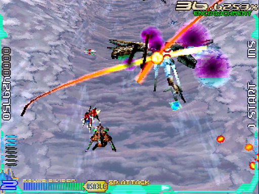
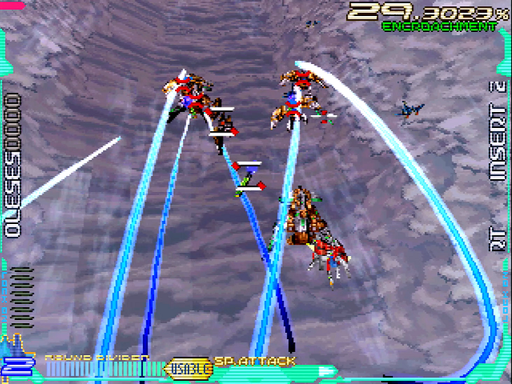
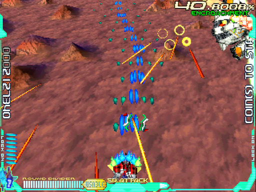
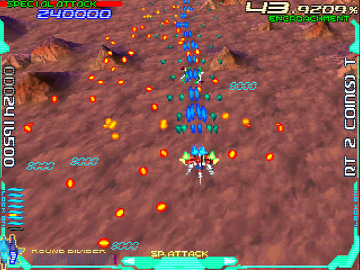
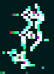

記憶領域(Memory Part)/高空面
大半の敵が空中にいるため、衝突の危険が高めです。おまけに侵食率がえらく増えやすいオマケ付き。面としての難易度は、一番高いかもしれません。
ちなみに、攻略本のインタビューいわくベースは「パリ」だそうです。
道中
チェックポイント
1つ目
画像手前のM101が、おおむね画面中央に来た辺り
2つ目
画像のE192編隊が、おおむね画面中央に来た辺り
通常パターン
1面の場合
開幕はアイテムキャリアーを右から出し、E093を爆風で迎撃します。その後はE184やE015をまとめ撃ちし、M096が出たらハイパーレーザー。耐久力がレーザー17本分なので、ショットも当てておきましょう。
この領域では敵がすぐ逃げるので、後ろから出てくるE507やE388は単発レーザーを乱打してでも倒します。もちろん、サイズの大きいM101も逃さずに。
M319が出現したら、フルロックしてハイパーレーザー。耐久力はレーザー10本分なので、小出しのショットで調整します。大きく外側を回って避けましょう。
その後はE192やE0610をまとめ撃ちして、侵食率が上がらないように頑張ります。
ただしE0311は衝突が怖いので、自機を画面中央に寄せて奥に出し、ショットで倒すと良いでしょう。最大の山場はここ、M44a12。耐久力がレーザー38本分とクソ高く、全方位バラまきにビットまで付いてくる始末。
アイテムキャリアー13へのハイパーレーザーに巻き込み→ラウンドディバイダー一択でしょう。ショットを本体にねじ込めば、何とか倒しきれると思います。
2・3面の場合
この領域は、前半の敵編成が配置タイプでわりと変わります。なので、1面以外では侵食率によってパターンを変えるケースもあります。
その影響はのっけから。配置タイプが2以上だと、まずM096が出てきます。弾を見てかいくぐりつつ、本体にハイパーレーザーを決めましょう。
羽からミサイルが出てくるので、ショットでしっかり壊します。続けて出てくるE0610も、この構成だと機雷を吐いてくるので存外事故ります。妙に固い事もあって、ちょっと怖い相手と言えましょう。
ショットだけでなく、レーザーを連打して確実に仕留めます。以降は「敵の数」が変わるぐらいで「敵自体」が変わる事は無く、1面の場合と同じパターンが使えます。
ランク調整パターン
1面の場合
開幕は、侵食率が90%に達するまでひたすら逃がします。M096も弾数が少ないため、大きく振って外を逃げられます。
1回・2回・3回と撃ってくるので、テンポ良く動きましょう。M319についても、画面端に撃たせて反対側へ切り返せばカンタンです。ただし、あまりに前へ出すぎたりすると追尾ミサイルを撃ってきますので、やり過ぎは禁物。
90%を超えたらE9914をその都度倒して、上昇を抑えます。併せて、E192編隊は数機まとめ撃ちしてください。
この辺りは侵食率がモリモリ上がるため、油断すると100%に達してしまいます。E192編隊は2度現れますが、後者はとくに上がりが激しいので危険です。直前のE093をまとめ撃ちしても、焼け石に水といった感じ。
不安があれば、80%台まで下げて臨むのもアリです。M096をまた逃がし、ラストに現れるM101とE388のセットをまとめ撃ちして、侵食率を下げましょう。
ボス戦突入時に70～80%ぐらいなら、ちょうど良いと言えます。
2面の場合
最初に申し上げた通り、この面は侵食率がやけに上がりやすいです。おまけに、2面だと敵も容赦なく弾を撃ってくるため、逃がしづらくてなお厄介。
なので、道中通して50%台を維持できればOK。コツとしては単発レーザーやショットで倒す事でしょう。こうすると、片っ端から倒しても意外と高いままです。
3面の場合
こちらはいささか面倒です。配置タイプ1(＝侵食率40%以上)を貫きながら「クリア時25%以下」というのが、意外に難問なのです。
どうかすると、25.0014%などという悲惨な状況に陥ります。私も最初に「全マップクリア」を目指した時、最大の壁となったのがこの構成でした。なので、自信が無かったり、何度かやってどうにも上手く行かなかった場合、後半は侵食率をガンガン下げましょう。
ただしその場合でも、しっかりまとめ撃ちやハイパーレーザーで倒さないと下がりません。最悪の場合、侵食率も難易度も高いなんて事になりえます。
侵食率を保つ場合
やる事は2面の場合とあまり変わりません。2つのチェックポイントで40%を保ちつつ、後は片っ端から敵を倒します。
途中で下げすぎた場合は、比較的安全なE0610やE507を逃がして調整して下さい。最後に出てくるM096とM101は、1機も逃さぬよう!
侵食率を下げる場合
通常パターンの「2・3面の場合」がそのまま使えます。そちらをお読み下さい。
ボス「Sem-frey」
耐久力(単位：レーザー本数)
- 1面(第1形態/第2形態)：120/40
- 2面(第1形態/第2形態)：210/110
- 3面(第1形態/第2形態)：290/170
- パーツ
- 脚部：24
- ミサイル：4
基本的なこと
とにかく、演出という名の遅延行為を仕掛けてきます。最短で倒しても13%ほど増加するため、実質的には7%しか下がりません。
つまり、ボス戦突入時に31%を超えていたらアウトです。それを承知の上で、なるたけ早く仕留めましょう。
第1形態
開幕は、どちらかの脚部3本を全力で破壊します。最初の位置の関係から、向かって右がオススメです。奥へ向かって、レーザーをひたすら連射します。
言うまでも無くレーザーが飛んでくるので、なるべく縦の動きだけでやり過ごします。横に動くと、攻撃がそれてダメージ効率が落ちます。
次は高度を下げて無敵になり、ミサイルを出してきます。地味に耐久力が高いので、最初に1本壊すぐらいで後は逃げましょう。
赤いビーム部分に判定は無いので、前後を回り込むように動くとラクです。とはいえ挙動が不安定なので、ラウンドディバイダーを切っても構いません。
ここまできちんとダメージを与えていれば、Sem-freyが戻ってきた辺りで残りの脚部を落として形態移行するはずです。
第2形態
形態移行した後は、ひたすら本体部分へレーザーを連射します。
ハイパーレーザーを使う手も無くは無いですが、どうもこのボスとは相性が悪いようです。爆風で負荷がかかるため、かもしれません。いったん画面外へ逃げ出し、拡散レーザーをバラまきながらまた逃げていきます。軌道としては素直ですが、長くて速いのでしっかり動きを予測して避けましょう。
続いて、弾をバラまきながら逃げていきます。下と横へ飛んでいく弾が混ざっており、なかなかの圧力。
ここはあらかじめSem-freyの進行方向に陣取り、弾が撃たれ出したら反対側へ切り返します。すると、避けるべきは横への弾だけになり、負担が減ります。これらが終わると戻ってきて、ミサイルを出しつつしばらく画面に留まります。この間に、ひたすら本体をレーザー連射で削ります。
近寄ってくるミサイルも、ついでに倒してしまいましょう。最後にもう一度、弾を吐いて逃げるタイミングがあります。ここでラウンドディバイダーを使いましょう。
すでに撃ったりしていてゲージが足りなければ、見て抜けるより他ありません。手元ほど隙間が広がるので、ワンチャンはあります。
画面外から戻ってきた辺りで倒して、-20%できるはずです。遅くともそこから数秒以内に。
もう一度逃げられた場合は、撃ち込みが足りていません。倒しても25%を切れないと思います。
1. M10「Lexicon δ1」 ↩
2. E19「ν Morphemes」 ↩
3.E09「θ Morphemes」 ↩
4. E18「μ Morphemes」 ↩
5.E01「α Morphemes」 ↩
6. M09「Lexicon δ4」 ↩
7.E50「ρ Morphemes」 ↩
8.E38「π Morphemes」 ↩
9. M31「Lexicon R4」 ↩
10.E06「ζ Morphemes」 ↩
11. E03「γ Morphemes」 ↩
12. M44a「Lexicon φ1」 ↩
13.アイテムキャリアー ↩
14. E99「Proto Morphemes」 ↩